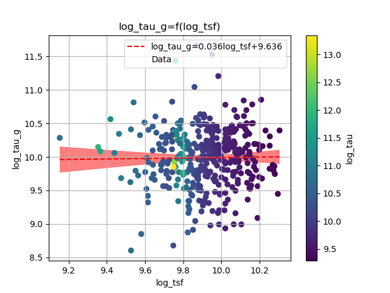

Investigations of the galaxies of the LCV
Dimitrios Papachistopoulos
Created: 2023-04-30 Sun 20:48
1. Abstract
1.1. LCV
The paper investigates the properties of galaxies in the Local Cosmological Volume (LCV), using the Catalogue of Neighboring Galaxies(Karachentsev, Makarov, and Kaisina 2013) and its updated version from the “Catalog & Atlas of the LV galaxies” database(“Catalog of the LV Galaxies” n.d.).
1.2. The studied properties
- Galaxy types,
- Their various masses,
- The star formation rates (SFRs)
- Timescales
- Star formation timescale \(\tau\),
- Gas depletion timescale \(\tau_g\)
- The star formation time \(t_{sf}\).
1.3. Goal
The paper aims to understand the distribution and correlation of these properties in the sample of galaxies in the LCV, and how they relate to current astrophysical theories.
2. The Galaxies in the Local Cosmological Volume (LCV)
The Catalogue of Neigbouring Galaxies (Karachentsev, Igor D. and Makarov et al. 2013(Karachentsev, Makarov, and Kaisina 2013)) and its updated version from the “Catalog & Atlas of the LV galaxies” database(“Catalog of the LV Galaxies” n.d.) are used
2.1. Data
2.1 Data
- The galaxies are within a distance of \(\approx 11\) Mpc.
- Some of those values contain limit flags, which we exclude from our present analysis. This gives a sample of 793 galaxies from 1248
| Measurment | Number of Galaxies |
|
Name FUVmag TType Tdw1 Tdw2 Bmag SFR\_Ha SFR\_FUV K MHI color |
793 687 793 580 568 790 566 688 789 643 686 |
2.1 Data
- The K-band values are converted to the total Stellar Masses of each galaxy according to the mass-to-light ratio(Lelli, McGaugh, and Schombert 2016) \[\frac{M_*}{K}=0.6\]
- The \(M_{HI}\) can be converted to the total mass of the gas of the galaxy using the equation \[M_g=1.33\cdot M_{HI}\]
2.1 Data
- The total SFR of each galaxy can be calcuated by
\[ SFR_o=\frac{SFR_{FUV}+SFR_{Ha}}{2} \]
\[ SFR_o=SFR_i,\ \text{if } SFR_j=0,i\neq j,\ i,j=FUV, H_a \]
- We use the FUV and B measurments to calculate the B-FUV color index.
2.1 Data
The condition \(SFR_o\geq 10^{-3}M_\odot yr^{-1}\) leaves 579 galaxies. This condition is applied due to the reasons given in the P. Kroupa,M. Haslbauer, I. Banik, S. T. Nagesh and J. Pflamm-Altenburg et al. 2020 \cite{kroupaConstraintsStarFormation2020}
3. Types of galaxies
Using the dataset of 1248 galaxies, do before using the condition and removing the galaxies with the flags, the below histograms can be plotted.
- Most of the galaxies in the LCV are Irregular galaxies followed by lenticular galaxies
- Out of the 1248 galaxies the 1022 are dwarf galaxies
- Most dwarf galaxies have low brightness and are irregulars followed by Dwarf spheroidal.

Figure 1: The classification by de Vaucouleurs et al. (1991) is used for the morphology of the galaxies

Figure 2: Dwarf galaxy morphology

Figure 3: Dwarf galaxy surface brightness morphology, where: H = high; N = normal; L = low; X = extremely low.
4. Delayed-\(\tau\) model
According to P. Kroupa et al. 2020(Kroupa et al. 2020) current star formation rates of galaxies can be described by the ’delayed-\(\tau\)’ model as
\noindent where \(\tau\) is the star formation time-scale, \(t_{sf}\) is the real time of star formation in a given galaxy and \(A_{del}\) a normalization constant.
The average SFR is
and can also be defined by the present day stellar mass
where \(\zeta\) accommodates for mass-loss through stella evolution and \(\zeta\approx 1.3\)
This is a system of 2 equations and 3 variables, since Adel has never been calculated
4.1. Constant \(t_{sf}\)
The observed ages of galactic discs are \(t_{sf}\approx 12\) Gyr(Knox, Hawkins, and Hambly 1999), so assuming an approximation of \(t_{sf}=12.5\) Gyr, the \(\overline{SFR_{del}}\) can be calcuated, from the equation (\ref{eq:av_SFR M*}).
After that the equation of ratio
can be solved numerically for \(x\) and using the equations (\Ref{eq:SFR}) and (\Ref{eq:av_SFR-x}) the \(A_{del}\) and \(\tau\) of each galaxy are found.

Figure 4: \(A_{del} = f(x)\) for constant tsf

Figure 5: \(A_{del} = f(\tau)\) for constant tsf

Figure 6: Total Mass \(M_t\) - \(A_{del}|_{t_{sf}}\)
\noindent
4.2. Constant \(\tau\)
Assuming for an constant \(\tau=3.5\) Gyr, we cannot use the same \(\overline{SFR}\) since it depends on \(t_{sf}\). Using the equations~(\Ref{eq:av_SFR M*}) and (\Ref{eq:ratio})
\[ \frac{\overline{SFR_{del}}}{SFR_{0,del}}=\frac{e^x-x-1}{x^2}\Leftrightarrow \frac{e^x-x-1}{x}=\frac{\zeta M_*}{SFR\cdot\tau} \]
using this equation \(x\) and \(A_{del}\) can be calculated numerically.

Figure 7: \(A_{del} = f(x)\) for constant \(\tau\)

Figure 8: \(A_{del} = f(t_{sf})\) for constant \(\tau\)

Figure 9: Total Mass \(M_t\) - \(A_{del}|_{\tau}\)
\noindent
4.3. Comparing the two results
4.3.1. Comparing the \(x\)’s
Comparing the two different results for x, we see that the \(x|_\tau\) has a lower \(\sigma\)

Figure 10: Comparing the two x’s, According to their total masses

Figure 11: \(x|_\tau=f(M_t)\), with their color index

Figure 12: Comparing the two x, according to their total mass

Figure 13: Comparing the two x, according to their type

Figure 14: Comparing the two x, according to their color index
The two results are interrelated through the equation:
\noindent
and from the plots the following conclusions can be drawn:
- The galaxies with a higher total mass deviate less from the linear fit and are older.
- The younger galaxies are mainly later types of galaxies
- For lower x’s, the galaxies have a lower color index which indicates that they are younger. So the values are inline with the experimental values.
4.3.2. Comparing the normalization constants

Figure 15: Comparing the two Adel

Figure 16: Comparison of the 2 Adels according to their \(x\)

Figure 17: Comparison of the 2 Adels according to their total masses
For high \(x\) and high masses the two Adels have a high correlation. Specifically:
- For high \(x\) the \(A_{del}|_{\tau}-A_{del}|_{t_{sf}}\) plot follows a \(y=x\) trend, which means that for older stars and stars with a low star formation timescale \(\tau\), the normalization constant is the same despite the method used to calculate it.
- The same is true for more massive galaxies, since they deviate less from the \(y=x\) line
4.3.3. Trying to make the Adel cloud more compact
Having found \(x|_{t_sf}\) and \(x|_{\tau}\) we can find a relation between these two values
Figure 18: Comparison of the 2 Adels according to their total masses
4.4. Int SFR to find the Adel
If we integrate equation (\ref{eq:SFR}) we get:

Figure 19: Comparison of the 2 Adels according to their total masses

Figure 20: Comparison of the Adel according to their Stellar Mass
5. The gas depletion timescale \(\tau_g\) \label{SEC:tau_g}
The gas depletion timescale \(\tau_g\) measures the time taken by a galaxy to exhaust its gas content Mg given the current SFR(Nagesh et al. 2023; Pflamm-Altenburg and Kroupa 2009).


Figure 21: Correlation of the \(\tau_g\) with the SFR and the gas mass
Despite a weak logarithmic correlation (as indicated by ==), there is a noticeable trend of decreasing \(\tau_g\) with increasing SFR and \(M_g\).

Figure 22: Correlation of the \(\tau_g\) with the SFR and the Stellar mass
The logarithmic correlation between \(\tau_g-M_*\) is low (==), there seems to be a pattern wherein the decrease of \(\tau_g\) corresponds to an increase in the values of the Stellar Mass, but there does not seem to be one for \(\tau_g-\tau\)

Figure 23: Correlation of the \(\tau_g\) with the total mass and the mass of the gas

Figure 24: Correlation of the \(\tau_g\) with the color index

Figure 25: Correlation of the \(\tau_g\) with the color index
Again it can be observed that as the \(\tau_g\) decreases, the corresponding values of \(M_t\) increase, but the logarithmic correlation is again low (==), and there is no clear correlation between \(\tau_g-t_{sf}\)
There is a notable trend, wherein for high masses we have a shorter timescale.
6. Mass relations
Many of the galaxies masses have a high correlation with each other, and also help us understand the previous calculations.

Figure 26: Gas Mass-Stellar Mass plot
For the plot 26:
\noindent

Figure 27: Mass inside the Holmberg radius-Stellar Mass plot
For the plot 27:
\noindent

Figure 28: Mass inside the Holmberg radius-Gas Mass plot
For the plot 28:
\noindent

Figure 29: Stellar Mass-Total Mass plot
For the plot 29:
\noindent

Figure 30: Total Mass - Gas Mass plot
For the plot 30:
\noindent

Figure 31: Mass inside the Holmberg radius-Total Mass plot
\noindent
There are many plots exhibiting a correlation of \(R^2>80%\), indicating that we can utilize those functions to estimate the masses of the galaxies in the LCV with a high degree of confidence.
The \(M_t-M_*\) (\ref{fig:SMass_mt}) plot is particularly noteworthy, displaying a correlation of ==. This plot also indicates that galaxies with greater total and stellar masses tend to have higher SFR, consistent with the findings in section \ref{SEC:tau_g} where \(\tau_g\) decreases with increasing masses.
This phenomenon is likely due to the fact that galaxies with higher masses possess greater potential energy, which accelerates the star formation process. The galaxies with a high Mass ratio \(M_r\) could also help the process due to their dense regions and the resulting strong local gravitational potential.

Figure 32: $\tsf$-Mass ratio \(\left(\frac{M_*}{M_g}\right)\) plot

Figure 33: Mass ratio $\frac{M_*}{M_g}$-Color index plot
From the \ref{fig:col_Mr}, we conclude that when the color index is higher the Mass ratio decreases, which is to be expected, since the higher the B-FUV the more active the star formation of the galaxy.
7. Variations in Star Formation Rate Across the Different Masses

Figure 34: None

Figure 35: None

Figure 36: None

Figure 37: None
 ’
’
7.1. TODO put that tau and tsf dont have a correlation with Mt
\pagebreak